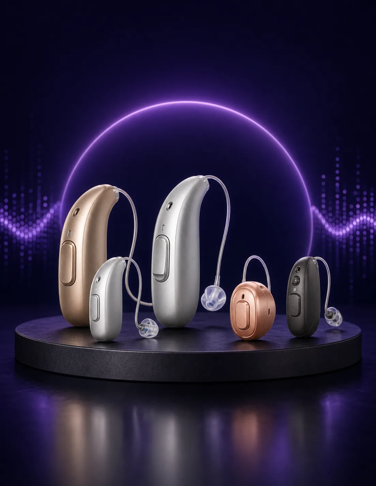
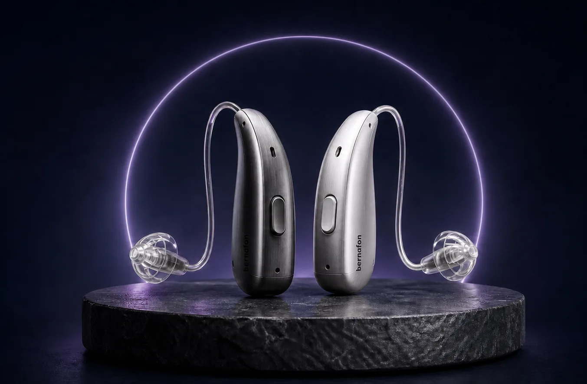
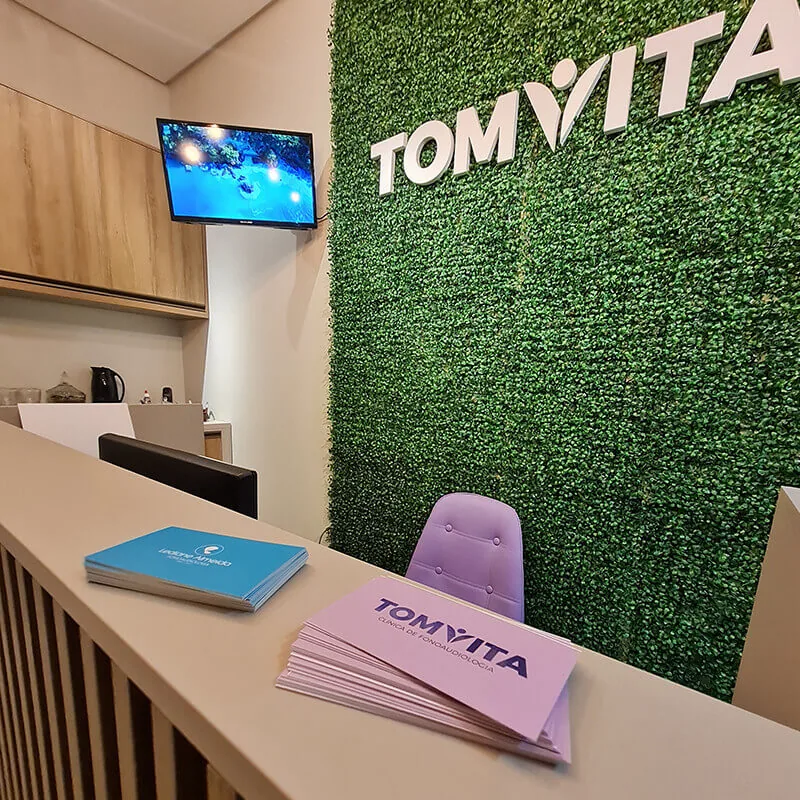
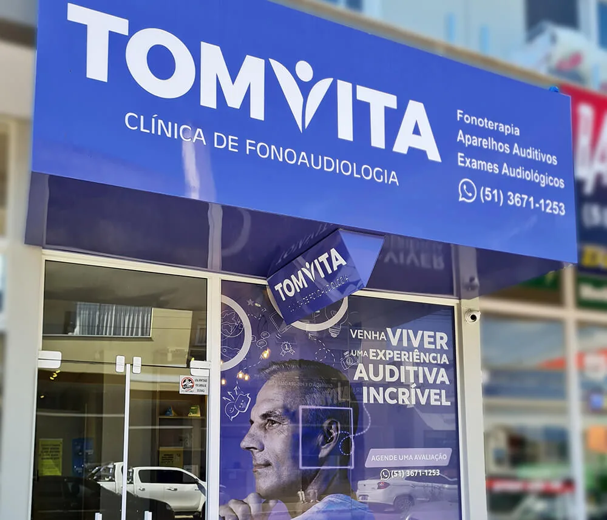
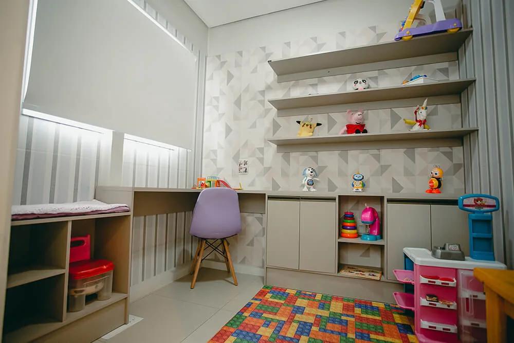
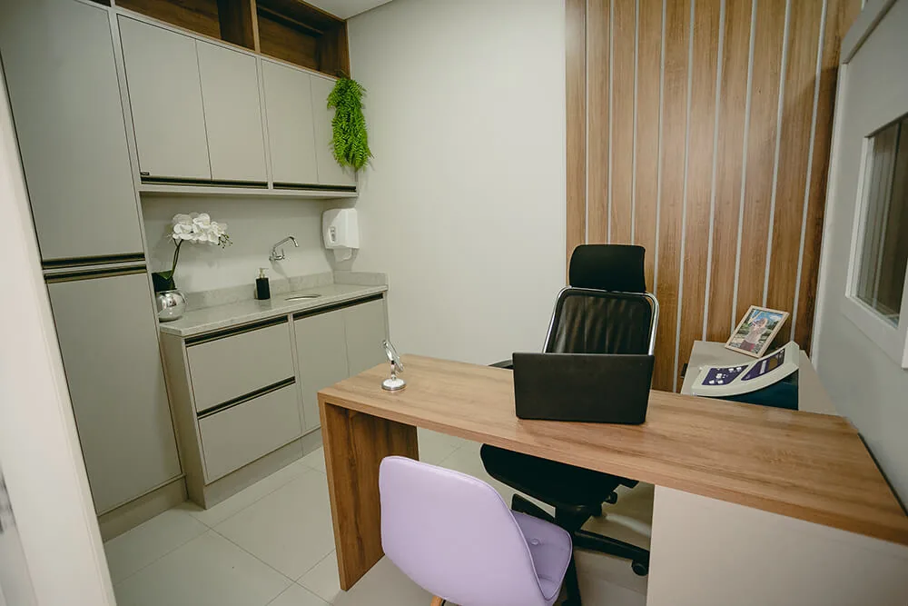
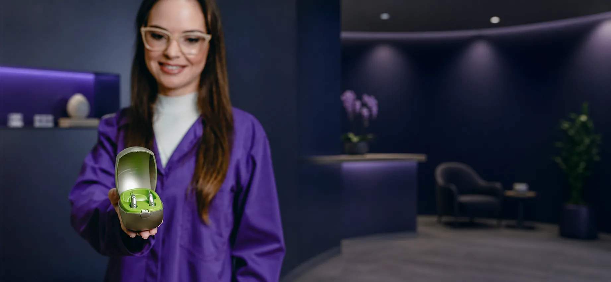

M
Maria SilvaGoogle
★★★★★
“Atendimento maravilhoso! As fonoaudiólogas são muito atenciosas e o aparelho auditivo mudou a minha vida. Recomendo muito a unidade de Camaquã.”
Aparelhos auditivos Bernafon, avaliação especializada e acompanhamento próximo para você ouvir com mais clareza, conforto e confiança.
Agendar pelo WhatsApp Conhecer aparelhos Bernafon

Voltar a participar das conversas, ouvir a família com clareza e viver com mais segurança começa com um cuidado feito para você.
Descubra com orientação especializada a melhor solução para voltar a ouvir com segurança e conforto.
Desenvolvidos para oferecer som claro e confortável, os aparelhos Bernafon combinam tecnologia avançada e design discreto para se adaptar ao seu dia a dia.

Com a tecnologia Bernafon e o cuidado TomVita, você tem acesso a soluções auditivas de alta performance, com orientação para escolher, testar e se adaptar com confiança.
Falar com um especialista“Atendimento maravilhoso! As fonoaudiólogas são muito atenciosas e o aparelho auditivo mudou a minha vida. Recomendo muito a unidade de Camaquã.”
“Excelente estrutura na clínica. Fiz o teste da orelhinha no meu bebê e fomos super bem acolhidos por toda a equipe.”
“Profissionais super capacitadas. Minha adaptação com o aparelho foi rápida, prática e tranquila graças ao suporte da TomVita.”
Uma clínica completa para acompanhar crianças, adultos e famílias com atenção individualizada.
Estímulos para fala, linguagem, audição e desenvolvimento infantil.
Agendar atendimentoAvaliações precisas para acompanhar a saúde auditiva em todas as idades.
Agendar atendimentoCuidados importantes para o começo da vida e o desenvolvimento da comunicação.
Agendar atendimentoExame complementar para investigar o funcionamento da orelha média.
Agendar atendimentoSeu cuidado não termina quando o aparelho é escolhido. Estamos perto para orientar e acompanhar a sua evolução.
Conversar com a TomVita



Um ambiente acolhedor, equipe especializada e cuidado próximo para você e sua família.
Fonoaudióloga, torne-se uma parceira TomVita e ofereça aos seus pacientes o que há de melhor em soluções auditivas com todo o nosso suporte.
Quero ser parceira
Consulte nossas unidades e escolha o local mais conveniente para cuidar da sua audição.
Fale com a nossa equipe e encontre o melhor caminho para voltar a ouvir com confiança.